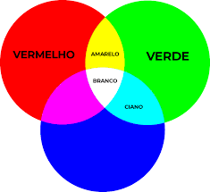

Soco a 80km/h: Conheça o Stomatopoda.

Informações Gerais :
O nome científio do Stomatopoda é Odontodactylus scyllarus
e sua classificação científica é feita da seguinte forma :
| Reino: |
Animalia |
| Filo: |
Arthropoda |
| Subfilo: |
Crustacea |
| Classe: |
Malacostraca |
| Subclasse: |
Hoplocarida |
| Ordem: |
Stomatopoda |
Fatos sobre o Stomatopoda:
Força de ataque

Quantas cores ele vê?

Vídeo adicional sobre o Stomatopoda